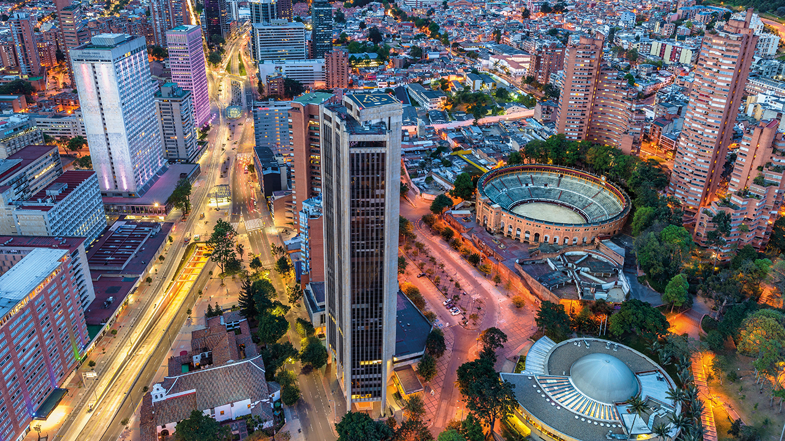
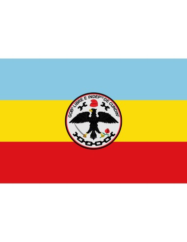
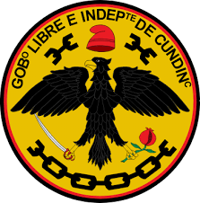

(se repite tras cada una de las dos primeras estrofas)
Con acento febril entonemos
de esta tierra un himno triunfal
y a tu historia gloriosa cantemos
para nunca tu nombre olvidar.
Fuiste asiento de tribus heróicas
Cundinamarca, patria sin igual,
que labraron altivas tus rocas
y forjaron tu sino inmortal.
En tus campos hay sol y esperanza;
son emporio de rica heredad,
a Colombia das hombres de gracia
que le cubren de fe y dignidad.


Pagina web creada por: KAREN MAYERLY NEUSA PIAMONTE CHARIC ALEXANDRA CARABALI FLOREZ CURSO:1107-2026